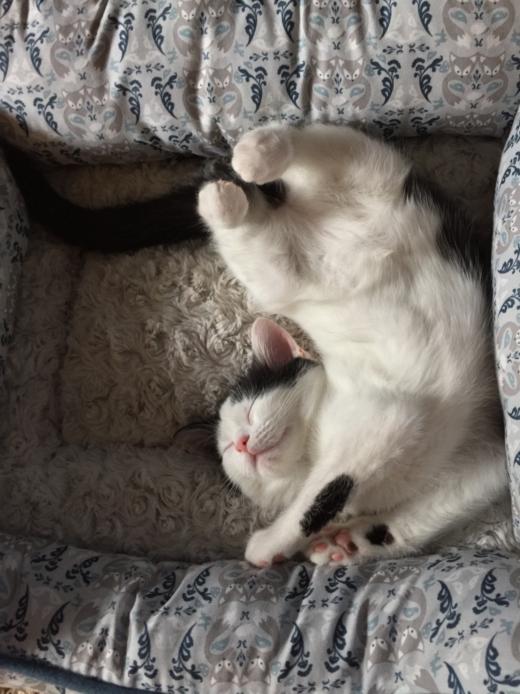

Lily's Life
About Me
 Hello, my name is Lilyanna but I like to be called Lily. My page is all about my life and the things that matter most. Spending time with mom and dad, swimming in the summertime, and sleeping-in are just a few things that are dear to me. I started 2nd grade at a new school this year and at first didn’t want to go, but after the first day loved it! Mrs. Morris is my teacher and she is really nice. I am learning new stuff in my classes and making new friends. My closest friend, Pilar, and I became friends on the first day of school. She brought in the cutest kitty cat toy and let me play with it at recess. Now we play together every day.
Hello, my name is Lilyanna but I like to be called Lily. My page is all about my life and the things that matter most. Spending time with mom and dad, swimming in the summertime, and sleeping-in are just a few things that are dear to me. I started 2nd grade at a new school this year and at first didn’t want to go, but after the first day loved it! Mrs. Morris is my teacher and she is really nice. I am learning new stuff in my classes and making new friends. My closest friend, Pilar, and I became friends on the first day of school. She brought in the cutest kitty cat toy and let me play with it at recess. Now we play together every day.
My Family
1 mom and dad. 2 grandma and grandpas. 3 aunts. A double handful of fur babies. I’ve got a lot of people in my family. Whether we are eating dinner, playing outside, or watching Trolls, I love all the time I get to spend with them. 

My Favorites
I could give a list of why a chocolate cake is the best creation ever, but that will just make everyone hungry. So, I will start pizza as one of my top favorite foods. I took swimming classes this past summer and now know how to swim like a fish. I can’t wait for the My Little Pony movie to come out because Rainbow Dash is my favorite hero. The softest spot in my heart goes to, none other than, cats. Cats. Cats. Cats. I LOVE CATS!
My Future
 My mom asked me a question, which I liked better, cats or dogs? I said cats because they have 9 lives and are cuter. Thinking back, I think all animals deserve 9 lives and all of them are cuter. I would like to be a Veterinarian when I grow-up so I can spend time with and help animals.
My mom asked me a question, which I liked better, cats or dogs? I said cats because they have 9 lives and are cuter. Thinking back, I think all animals deserve 9 lives and all of them are cuter. I would like to be a Veterinarian when I grow-up so I can spend time with and help animals.